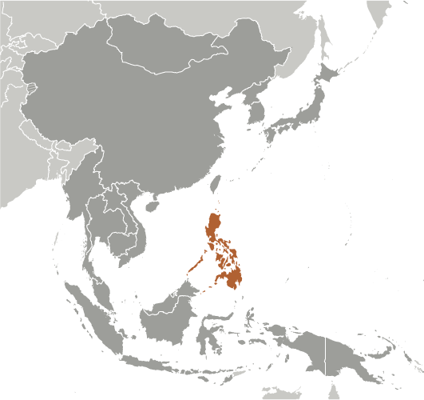
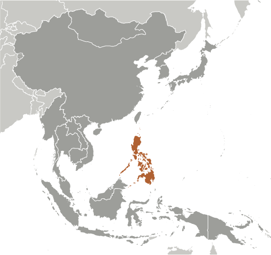

East & Southeast Asia :: PHILIPPINES
Introduction :: PHILIPPINES
-
The Philippine Islands became a Spanish colony during the 16th century; they were ceded to the US in 1898 following the Spanish-American War. In 1935 the Philippines became a self-governing commonwealth. Manuel QUEZON was elected president and was tasked with preparing the country for independence after a 10-year transition. In 1942 the islands fell under Japanese occupation during World War II, and US forces and Filipinos fought together during 1944-45 to regain control. On 4 July 1946 the Republic of the Philippines attained its independence. A 20-year rule by Ferdinand MARCOS ended in 1986, when a "people power" movement in Manila ("EDSA 1") forced him into exile and installed Corazon AQUINO as president. Her presidency was hampered by several coup attempts that prevented a return to full political stability and economic development. Fidel RAMOS was elected president in 1992. His administration was marked by increased stability and by progress on economic reforms. In 1992, the US closed its last military bases on the islands. Joseph ESTRADA was elected president in 1998. He was succeeded by his vice-president, Gloria MACAPAGAL-ARROYO, in January 2001 after ESTRADA's stormy impeachment trial on corruption charges broke down and another "people power" movement ("EDSA 2") demanded his resignation. MACAPAGAL-ARROYO was elected to a six-year term as president in May 2004. Her presidency was marred by several corruption allegations but the Philippine economy was one of the few to avoid contraction following the 2008 global financial crisis, expanding each year of her administration. Benigno AQUINO III was elected to a six-year term as president in May 2010 and was succeeded by Rodrigo DUTERTE in May 2016.The Philippine Government faces threats from several groups, some of which are on the US Government's Foreign Terrorist Organization list. Manila has waged a decades-long struggle against ethnic Moro insurgencies in the southern Philippines, which has led to a peace accord with the Moro National Liberation Front and ongoing peace talks with the Moro Islamic Liberation Front. The decades-long Maoist-inspired New People's Army insurgency also operates through much of the country. The Philippines faces increased tension with China over disputed territorial and maritime claims in the South China Sea.
Geography :: PHILIPPINES
-
Southeastern Asia, archipelago between the Philippine Sea and the South China Sea, east of Vietnam13 00 N, 122 00 ESoutheast Asiatotal: 300,000 sq kmland: 298,170 sq kmwater: 1,830 sq kmcountry comparison to the world: 73slightly less than twice the size of Georgia; slightly larger than Arizona0 km36,289 kmterritorial sea: irregular polygon extending up to 100 nm from coastline as defined by 1898 treaty; since late 1970s has also claimed polygonal-shaped area in South China Sea as wide as 285 nmexclusive economic zone: 200 nmcontinental shelf: to the depth of exploitationtropical marine; northeast monsoon (November to April); southwest monsoon (May to October)mostly mountains with narrow to extensive coastal lowlandsmean elevation: 442 melevation extremes: lowest point: Philippine Sea 0 mhighest point: Mount Apo 2,954 mtimber, petroleum, nickel, cobalt, silver, gold, salt, copperagricultural land: 41%arable land 18.2%; permanent crops 17.8%; permanent pasture 5%forest: 25.9%other: 33.1% (2011 est.)16,270 sq km (2012)astride typhoon belt, usually affected by 15 and struck by five to six cyclonic storms each year; landslides; active volcanoes; destructive earthquakes; tsunamisvolcanism: significant volcanic activity; Taal (elev. 311 m), which has shown recent unrest and may erupt in the near future, has been deemed a Decade Volcano by the International Association of Volcanology and Chemistry of the Earth's Interior, worthy of study due to its explosive history and close proximity to human populations; Mayon (elev. 2,462 m), the country's most active volcano, erupted in 2009 forcing over 33,000 to be evacuated; other historically active volcanoes include Biliran, Babuyan Claro, Bulusan, Camiguin, Camiguin de Babuyanes, Didicas, Iraya, Jolo, Kanlaon, Makaturing, Musuan, Parker, Pinatubo and Raganguncontrolled deforestation especially in watershed areas; soil erosion; air and water pollution in major urban centers; coral reef degradation; increasing pollution of coastal mangrove swamps that are important fish breeding groundsparty to: Biodiversity, Climate Change, Climate Change-Kyoto Protocol, Desertification, Endangered Species, Hazardous Wastes, Law of the Sea, Marine Dumping, Ozone Layer Protection, Ship Pollution, Tropical Timber 83, Tropical Timber 94, Wetlands, Whalingsigned, but not ratified: Air Pollution-Persistent Organic Pollutantsthe Philippine archipelago is made up of 7,107 islands; favorably located in relation to many of Southeast Asia's main water bodies: the South China Sea, Philippine Sea, Sulu Sea, Celebes Sea, and Luzon Strait
People and Society :: PHILIPPINES
-
102,624,209 (July 2016 est.)country comparison to the world: 13noun: Filipino(s)adjective: PhilippineTagalog 28.1%, Cebuano 13.1%, Ilocano 9%, Bisaya/Binisaya 7.6%, Hiligaynon Ilonggo 7.5%, Bikol 6%, Waray 3.4%, other 25.3% (2000 census)Filipino (official; based on Tagalog) and English (official); eight major dialects - Tagalog, Cebuano, Ilocano, Hiligaynon or Ilonggo, Bicol, Waray, Pampango, and PangasinanCatholic 82.9% (Roman Catholic 80.9%, Aglipayan 2%), Muslim 5%, Evangelical 2.8%, Iglesia ni Kristo 2.3%, other Christian 4.5%, other 1.8%, unspecified 0.6%, none 0.1% (2000 census)0-14 years: 33.71% (male 17,652,419/female 16,943,261)15-24 years: 19.17% (male 10,042,520/female 9,629,762)25-54 years: 36.86% (male 19,204,977/female 18,618,333)55-64 years: 5.89% (male 2,758,867/female 3,282,416)65 years and over: 4.38% (male 1,863,339/female 2,628,315) (2016 est.)total dependency ratio: 57.6%youth dependency ratio: 50.3%elderly dependency ratio: 7.2%potential support ratio: 13.9% (2015 est.)total: 23.4 yearsmale: 22.9 yearsfemale: 23.8 years (2016 est.)country comparison to the world: 1681.59% (2016 est.)country comparison to the world: 7324 births/1,000 population (2016 est.)country comparison to the world: 616.1 deaths/1,000 population (2016 est.)country comparison to the world: 161-2 migrant(s)/1,000 population (2016 est.)country comparison to the world: 168urban population: 44.4% of total population (2015)rate of urbanization: 1.32% annual rate of change (2010-15 est.)MANILA (capital) 12.946 million; Davao 1.63 million; Cebu City 951,000; Zamboanga 936,000 (2015)at birth: 1.05 male(s)/female0-14 years: 1.04 male(s)/female15-24 years: 1.04 male(s)/female25-54 years: 1.03 male(s)/female55-64 years: 0.84 male(s)/female65 years and over: 0.72 male(s)/femaletotal population: 1.01 male(s)/female (2016 est.)23note: median age at first birth among women 25-29 (2013 est.)114 deaths/100,000 live births (2015 est.)country comparison to the world: 74total: 21.9 deaths/1,000 live birthsmale: 24.8 deaths/1,000 live birthsfemale: 18.8 deaths/1,000 live births (2016 est.)country comparison to the world: 78total population: 69.2 yearsmale: 65.7 yearsfemale: 72.9 years (2016 est.)country comparison to the world: 1613.06 children born/woman (2016 est.)country comparison to the world: 5648.9% (2011)4.7% of GDP (2014)country comparison to the world: 1501 beds/1,000 population (2011)improved:urban: 93.7% of populationrural: 90.3% of populationtotal: 91.8% of populationunimproved:urban: 6.3% of populationrural: 9.7% of populationtotal: 8.2% of population (2015 est.)improved:urban: 77.9% of populationrural: 70.8% of populationtotal: 73.9% of populationunimproved:urban: 22.1% of populationrural: 29.2% of populationtotal: 26.1% of population (2015 est.)0.08% (2015 est.)country comparison to the world: 11842,500 (2015 est.)country comparison to the world: 64600 (2015 est.)country comparison to the world: 83degree of risk: highfood or waterborne diseases: bacterial diarrhea, hepatitis A, and typhoid fevervectorborne diseases: dengue fever and malariawater contact disease: leptospirosis (2016)4.7% (2014)country comparison to the world: 14819.9% (2014)country comparison to the world: 292.7% of GDP (2009)country comparison to the world: 149definition: age 15 and over can read and writetotal population: 96.3%male: 95.8%female: 96.8% (2015 est.)total: 13 yearsmale: 12 yearsfemale: 13 years (2013)total: 16.2%male: 15.1%female: 17.8% (2013 est.)country comparison to the world: 74
Government :: PHILIPPINES
-
conventional long form: Republic of the Philippinesconventional short form: Philippineslocal long form: Republika ng Pilipinaslocal short form: Pilipinasetymology: named in honor of King Phillip II of Spain by Spanish explorer Ruy LOPEZ de VILLALOBOS, who visited some of the islands in 1543presidential republicname: Manilageographic coordinates: 14 36 N, 120 58 Etime difference: UTC+8 (13 hours ahead of Washington, DC, during Standard Time)80 provinces and 39 chartered citiesprovinces: Abra, Agusan del Norte, Agusan del Sur, Aklan, Albay, Antique, Apayao, Aurora, Basilan, Bataan, Batanes, Batangas, Biliran, Benguet, Bohol, Bukidnon, Bulacan, Cagayan, Camarines Norte, Camarines Sur, Camiguin, Capiz, Catanduanes, Cavite, Cebu, Compostela, Cotabato, Davao del Norte, Davao del Sur, Davao Oriental, Dinagat Islands, Eastern Samar, Guimaras, Ifugao, Ilocos Norte, Ilocos Sur, Iloilo, Isabela, Kalinga, Laguna, Lanao del Norte, Lanao del Sur, La Union, Leyte, Maguindanao, Marinduque, Masbate, Mindoro Occidental, Mindoro Oriental, Misamis Occidental, Misamis Oriental, Mountain, Negros Occidental, Negros Oriental, Northern Samar, Nueva Ecija, Nueva Vizcaya, Palawan, Pampanga, Pangasinan, Quezon, Quirino, Rizal, Romblon, Samar, Sarangani, Siquijor, Sorsogon, South Cotabato, Southern Leyte, Sultan Kudarat, Sulu, Surigao del Norte, Surigao del Sur, Tarlac, Tawi-Tawi, Zambales, Zamboanga del Norte, Zamboanga del Sur, Zamboanga Sibugaychartered cities: Angeles, Antipolo, Bacolod, Baguio, Butuan, Cagayan de Oro, Caloocan, Cebu, Cotabato, Dagupan, Davao, General Santos, Iligan, Iloilo, Lapu-Lapu, Las Pinas, Lucena, Makati, Malabon, Mandaluyong, Mandaue, Manila, Marikina, Muntinlupa, Naga, Navotas, Olongapo, Ormoc, Paranaque, Pasay, Pasig, Puerto Princesa, Quezon, San Juan, Santiago, Tacloban, Taguig, Valenzuela, Zamboanga (2012)4 July 1946 (from the US)Independence Day, 12 June (1898); note - 12 June 1898 was date of declaration of independence from Spain; 4 July 1946 was date of independence from the USseveral previous; latest ratified 2 February 1987, effective 11 February 1987 (2016)mixed legal system of civil, common, Islamic, and customary lawaccepts compulsory ICJ jurisdiction with reservations; accepts ICCt jurisdictioncitizenship by birth: nocitizenship by descent only: at least one parent must be a citizen of the Philippinesdual citizenship recognized: noresidency requirement for naturalization: 10 years18 years of age; universalchief of state: President Rodrigo DUTERTE (since 30 June 2016); Vice President Leni ROBREDO (since 30 June 2016); note - the president is both chief of state and head of governmenthead of government: President Rodrigo DUTERTE (since 30 June 2016)cabinet: Cabinet appointed by the president with the consent of the Commission of Appointments, an independent body of 25 Congressional members including the Senate president (ex officio chairman), appointed by the presidentelections/appointments: president and vice president directly elected on separate ballots by simple majority popular vote for a single 6-year term; election last held on 9 May 2016 (next to be held on May 2022)election results: Rodrigo DUTERTE elected president; percent of vote - Rodrigo DUTERTE (PDP-Laban) 39%, Manuel "Mar" ROXAS (LP) 23.4%, Grace POE (independent) 21.4%, Jejomar BINAY (UNA) 12.7%, Miriam Defensor SANTIAGO (PRP) 3%; Leni ROBREDO elected vice president; percent of vote Leni ROBREDO (LP) 35.1%, Bongbong MARCOS (independent) 34.5%description: bicameral Congress or Kongreso consists of the Senate or Senado (24 seats; members directly elected in multi-seat constituencies by majority vote; members serve 6-year terms with one-half of the membership renewed every 3 years) and the House of Representatives or Kapulungan Ng Mga Kinatawan (292 seats; 234 members directly elected in single-seat constituencies by simple majority vote and 58 representing minorities directly elected by proportional representation vote; members serve 3-year terms)elections: Senate - elections last held on 13 May 2013 (next to be held in May 2016); House of Representatives - elections last held on 13 May 2013 (next to be held in May 2016)election results: Senate - percent of vote by party for 2013 election - UNA 26.94%, NP 15.3%, LP 11.32%, NPC 10.15%, LDP 5.38%, PDP-Laban 4.95%, others 9.72%, independents 16.24%; seats by party after 2013 election - UNA 5, NP 5, LP 4, Lakas 2, NPC 2, LDP 1, PDP-Laban 1, PRP 1, independents 3; House of Representatives - percent of vote by party - LP 38.3%, NPC 17.4%, UNA 11.4%, NUP 8.7%, NP 8.5%, Lakas 5.3%, independents 6.0%, others 4.4%; seats by party - LP 110, NPC 43, NUP 24, NP 17, Lakas 14, UNA 8, independents 6, others 12; party-list 57highest court(s): Supreme Court (consists of a chief justice and 14 associate justices)judge selection and term of office: justices are appointed by the president on the recommendation of the Judicial and Bar Council, a constitutionally-created, 6-member body that recommends Supreme Court nominees; justices serve until age 70subordinate courts: Court of Appeals; Sandiganbayan (special court for corruption cases of government officials); Court of Tax Appeals; regional, metropolitan, and municipal trial courts; sharia courtsLaban ng Demokratikong Pilipino (Struggle of Filipino Democrats) or LDP [Edgardo ANGARA]Lakas ng EDSA-Christian Muslim Democrats or Lakas-CMD [Ferdinand Martin ROMUALDEZ, president]Liberal Party or LP [Joseph Emilio ABAYA, president]Nacionalista Party or NP [Manuel "Manny" VILLAR]Nationalist People's Coalition or NPC [Eduardo COJUNGCO, Jr.]PDP-Laban [Aquilino PIMENTEL III]People's Reform Party or PRP [Miriam Defensor SANTIAGO]Puwersa ng Masang Pilipino (Force of the Philippine Masses) or PMP [Joseph ESTRADA]United Nationalist Alliance or UNA [Toby TIANGCO (acting)] - PDP-Laban and PMP coalition for the 2013 electionBlack and White Movement [Vicente ROMANO]Kilosbayan [Jovito SALONGA]ADB, APEC, ARF, ASEAN, BIS, CD, CICA (observer), CP, EAS, FAO, G-24, G-77, IAEA, IBRD, ICAO, ICC (national committees), ICCt, ICRM, IDA, IFAD, IFC, IFRCS, IHO, ILO, IMF, IMO, IMSO, Interpol, IOC, IOM, IPU, ISO, ITSO, ITU, ITUC (NGOs), MIGA, MINUSTAH, NAM, OAS (observer), OPCW, PCA, PIF (partner), UN, UNCTAD, UNESCO, UNHCR, UNIDO, Union Latina, UNMIL, UNMOGIP, UNOCI, UNWTO, UPU, WCO, WFTU (NGOs), WHO, WIPO, WMO, WTOchief of mission: Ambassador (vacant); Charge d'Affaires Ad interim Patrick A. CHUASOTOchancery: 1600 Massachusetts Avenue NW, Washington, DC 20036telephone: [1] (202) 467-9300FAX: [1] (202) 328-7614consulate(s) general: Chicago, Honolulu, Los Angeles, New Yoek, Saipan (Northern Mariana Islands), San Francisco, Tamuning (Guam)chief of mission: Ambassador Sung KIM (since 6 December 2016)embassy: 1201 Roxas Boulevard, Manila 1000mailing address: PSC 500, FPO AP 96515-1000telephone: [63] (2) 301-2000FAX: [63] (2) 301-2017two equal horizontal bands of blue (top) and red; a white equilateral triangle is based on the hoist side; the center of the triangle displays a yellow sun with eight primary rays; each corner of the triangle contains a small, yellow, five-pointed star; blue stands for peace and justice, red symbolizes courage, the white equal-sided triangle represents equality; the rays recall the first eight provinces that sought independence from Spain, while the stars represent the three major geographical divisions of the country: Luzon, Visayas, and Mindanao; the design of the flag dates to 1897note: in wartime the flag is flown upside down with the red band at the topthree stars and sun, Philippine eagle; national colors: red, white, blue, yellowname: "Lupang Hinirang" (Chosen Land)lyrics/music: Jose PALMA (revised by Felipe PADILLA de Leon)/Julian FELIPEnote: music adopted 1898, original Spanish lyrics adopted 1899, Filipino (Tagalog) lyrics adopted 1956; although the original lyrics were written in Spanish, later English and Filipino versions were created; today, only the Filipino version is used
Economy :: PHILIPPINES
-
The economy has been relatively resilient to global economic shocks due to less exposure to troubled international securities, lower dependence on exports, relatively resilient domestic consumption, large remittances from about 10 million overseas Filipino workers and migrants, and a rapidly expanding outsourcing industry. The current account balance has recorded consecutive surpluses since 2003, international reserves remain at comfortable levels, and the banking system is stable.Efforts to improve tax administration and expenditures management have helped ease the Philippines' debt burden and tight fiscal situation. The Philippines has received investment-grade credit ratings on its sovereign debt under the AQUINO administration and has had little difficulty financing its budget deficits. However, weak absorptive capacity and implementation bottlenecks have prevented the government from maximizing its expenditure plans, which the administration has been working to address. Although it has improved, the low tax-to-GDP ratio remains a constraint to supporting increasingly higher spending levels and sustaining strong growth over the longer term.Economic growth has accelerated, averaging 6.0% per year from 2011 to 2015, compared with 4.5% under the MACAPAGAL-ARROYO government; and competitiveness rankings have improved. The Philippines has not sustained steady growth in foreign direct investment, which continues to lag regional peers.Although the economy has grown at a faster pace under the AQUINO government, challenges to achieving more inclusive growth remain. The unemployment rate has declined somewhat in recent years but remains high, hovering at around 6.5%; underemployment is also high, ranging from 18% to 19% of the employed. At least 40% of the employed work in the informal sector. Poverty afflicts about a quarter of the population. More than 60% of the poor reside in rural areas, a challenge to raising rural farm and non-farm incomes. The AQUINO administration has been working to boost expenditures for education, health, transfers to the poor, and other social spending programs. Infrastructure remains underfunded and the government is relying on the private sector to help with major projects under its Public-Private Partnership program. Continued efforts are needed to improve governance, the judicial system, the regulatory environment, and the overall ease of doing business.Notable achievements over the past year include passage of laws that liberalized the entry of foreign banks into the country; partially relaxed the cabotage law by allowing foreign vessels to ply import and export cargo within the archipelago; and passage of anti-trust legislation. Substantial progress has also been made towards passage of a Customs Tariff and Modernization Act to meet international standards and commitments, with strong prospects of enactment into law before President AQUINO steps down from office. However, the Philippine Constitution and other laws restrict foreign ownership in important activities/sectors - such as land ownership and public utilities.$741 billion (2015 est.)$700.4 billion (2014 est.)$659.9 billion (2013 est.)note: data are in 2015 US dollarscountry comparison to the world: 30$292 billion (2015 est.)5.8% (2015 est.)6.1% (2014 est.)7.1% (2013 est.)country comparison to the world: 31$7,300 (2015 est.)$7,000 (2014 est.)$6,700 (2013 est.)note: data are in 2015 US dollarscountry comparison to the world: 15323.4% of GDP (2015 est.)24.3% of GDP (2014 est.)24.2% of GDP (2013 est.)country comparison to the world: 64household consumption: 73.9%government consumption: 11%investment in fixed capital: 21.5%investment in inventories: -1%exports of goods and services: 28.2%imports of goods and services: -33.5% (2015 est.)agriculture: 10.3%industry: 30.8%services: 59% (2015 est.)sugarcane, coconuts, rice, corn, bananas, cassava (manioc, tapioca), pineapples, mangoes; pork, eggs, beef; fishelectronics assembly, garments, footwear, pharmaceuticals, chemicals, wood products, food processing, petroleum refining, fishing6% (2015 est.)country comparison to the world: 3341.76 million (2015 est.)country comparison to the world: 16agriculture: 29%industry: 16%services: 55% (2015 est.)6.3% (2015 est.)6.8% (2014 est.)country comparison to the world: 7225.2% (2012 est.)lowest 10%: 2.9%highest 10%: 30.5% (2012 est.)46 (2012)46.4 (2009)country comparison to the world: 34revenues: $46.35 billionexpenditures: $49.02 billion (2015 est.)15.9% of GDP (2015 est.)country comparison to the world: 191-0.9% of GDP (2015 est.)country comparison to the world: 5444.8% of GDP (2015 est.)45.4% of GDP (2014 est.)note: data cover debt issued by the national government, and excludes debt instruments issued by government entities other than the treasury; the data include treasury debt held by foreign entities; the data exclude debt issued by social security institutions, government-owned and controlled corporations, the Central Bank, and local government unitscountry comparison to the world: 100calendar year1.3% (2015 est.)4.2% (2014 est.)country comparison to the world: 1036.13% (31 December 2015)6.13% (31 December 2014)country comparison to the world: 645.58% (31 December 2015 est.)5.53% (31 December 2014 est.)country comparison to the world: 134$56.56 billion (31 December 2015 est.)$51.92 billion (31 December 2014 est.)country comparison to the world: 47$179.1 billion (31 December 2015 est.)$172.3 billion (31 December 2014 est.)country comparison to the world: 44$166.7 billion (31 December 2015 est.)$158.2 billion (31 December 2014 est.)country comparison to the world: 46$286.1 billion (31 December 2015 est.)$318.7 billion (31 December 2014 est.)$268.8 billion (31 December 2013 est.)country comparison to the world: 30$8.396 billion (2015 est.)$10.76 billion (2014 est.)country comparison to the world: 25$43.28 billion (2015 est.)$49.82 billion (2014 est.)country comparison to the world: 53semiconductors and electronic products, transport equipment, garments, copper products, petroleum products, coconut oil, fruitsJapan 21.1%, US 15%, China 10.9%, Hong Kong 10.6%, Singapore 6.2%, Germany 4.5%, South Korea 4.3% (2015)$64.97 billion (2015 est.)$67.16 billion (2014 est.)country comparison to the world: 40electronic products, mineral fuels, machinery and transport equipment, iron and steel, textile fabrics, grains, chemicals, plasticChina 16.2%, US 10.8%, Japan 9.6%, Singapore 7%, South Korea 6.5%, Thailand 6.4%, Malaysia 4.8%, Indonesia 4.4% (2015)$80.67 billion (31 December 2015 est.)$79.54 billion (31 December 2014 est.)country comparison to the world: 28$77.46 billion (31 December 2015 est.)$77.66 billion (31 December 2014 est.)country comparison to the world: 54$59.3 billion (31 December 2015 est.)$56.65 billion (31 December 2014 est.)country comparison to the world: 55$41.1 billion (31 December 2015 est.)$35.79 billion (31 December 2014 est.)country comparison to the world: 46Philippine pesos (PHP) per US dollar -45.503 (2015 est.)44.395 (2014 est.)44.395 (2013 est.)42.23 (2012 est.)43.313 (2011 est.)
Energy :: PHILIPPINES
-
population without electricity: 20,600,000electrification - total population: 88%electrification - urban areas: 94%electrification - rural areas: 82% (2013)74 billion kWh (2014 est.)country comparison to the world: 3966 billion kWh (2014 est.)country comparison to the world: 390 kWh (2013 est.)country comparison to the world: 1870 kWh (2013 est.)country comparison to the world: 19319 million kW (2014 est.)country comparison to the world: 4468% of total installed capacity (2012 est.)country comparison to the world: 1150% of total installed capacity (2012 est.)country comparison to the world: 17120.8% of total installed capacity (2012 est.)country comparison to the world: 9111.1% of total installed capacity (2012 est.)country comparison to the world: 3124,120 bbl/day (2015 est.)country comparison to the world: 6813,710 bbl/day (2013 est.)country comparison to the world: 611.503 million bbl/day (2014 est.)country comparison to the world: 7100 million bbl (1 January 2016 es)country comparison to the world: 691.373 million bbl/day (2014 est.)country comparison to the world: 16329,000 bbl/day (2014 est.)country comparison to the world: 41219,800 bbl/day (2014 est.)country comparison to the world: 321.577 million bbl/day (2014 est.)country comparison to the world: 43.47 billion cu m (2015 est.)country comparison to the world: 553.339 billion cu m (2015 est.)country comparison to the world: 660 cu m (2013 est.)country comparison to the world: 1690 cu m (2013 est.)country comparison to the world: 12598.54 billion cu m (1 January 2016 es)country comparison to the world: 5388 million Mt (2013 est.)country comparison to the world: 45
Communications :: PHILIPPINES
-
total subscriptions: 3.039 millionsubscriptions per 100 inhabitants: 3 (July 2015 est.)country comparison to the world: 47total: 120.255 millionsubscriptions per 100 inhabitants: 119 (July 2015 est.)country comparison to the world: 13general assessment: good international radiotelephone and submarine cable services; domestic and interisland service adequatedomestic: telecommunications infrastructure includes the following platforms: fixed line, mobile cellular, cable TV, over-the-air TV, radio and Very Small Aperture Terminal (VSAT), fiber-optic cable, and satellite for redundant international connectivityinternational: country code - 63; a series of submarine cables together provide connectivity to the US, and to countries like Hong Kong, Guam, Singapore, Taiwan, Japan, Brunei, and Malaysia, among others; multiple international gateways (2015)multiple national private TV and radio networks; multi-channel satellite and cable TV systems available; more than 350 TV stations - 6 major TV networks operating nationwide with 1 being government owned; about 1,300 cable TV providers with more than 2 million subscribers, and some 1,300 radio stations; the Philippines adopted Japan’s Integrated Service Digital Broadcast – Terrestrial standard for digital terrestrial television in November 2013 and is scheduled to complete the switch from analog to digital broadcasting by the end of 2015 (2015).phtotal: 41.106 millionpercent of population: 40.7% (July 2015 est.)country comparison to the world: 17
Transportation :: PHILIPPINES
-
number of registered air carriers: 11inventory of registered aircraft operated by air carriers: 158annual passenger traffic on registered air carriers: 32,230,986annual freight traffic on registered air carriers: 484,190,968 mt-km (2015)RP (2016)247 (2013)country comparison to the world: 24total: 89over 3,047 m: 42,438 to 3,047 m: 81,524 to 2,437 m: 33914 to 1,523 m: 34under 914 m: 10 (2013)total: 1581,524 to 2,437 m: 3914 to 1,523 m: 56under 914 m: 99 (2013)2 (2013)gas 567 km; oil 138 km; refined products 185 km (2013)total: 995 kmnarrow gauge: 995 km 1.067-m gauge (484 km are in operation) (2015)country comparison to the world: 92total: 216,387 kmpaved: 61,093 kmunpaved: 155,294 km (2014)country comparison to the world: 233,219 km (limited to vessels with draft less than 1.5 m) (2011)country comparison to the world: 30total: 446by type: bulk carrier 76, cargo 152, carrier 12, chemical tanker 27, container 17, liquefied gas 5, passenger 7, passenger/cargo 65, petroleum tanker 44, refrigerated cargo 20, roll on/roll off 11, vehicle carrier 10foreign-owned: 159 (Bermuda 47, China 4, Denmark 2, Germany 2, Greece 5, Japan 77, Malaysia 1, Netherlands 17, Singapore 1, South Korea 1, Taiwan 1, UAE 1)registered in other countries: 7 (Cyprus 1, Panama 5, unknown 1) (2010)country comparison to the world: 23major seaport(s): Batangas, Cagayan de Oro, Cebu, Davao, Liman, Manilacontainer port(s) (TEUs): Manila (3,342,200)the International Maritime Bureau reports the territorial and offshore waters in the South China Sea as high risk for piracy and armed robbery against ships; numerous commercial vessels have been attacked and hijacked both at anchor and while underway; hijacked vessels are often disguised and cargo diverted to ports in East Asia; crews have been murdered or cast adrift
Military and Security :: PHILIPPINES
-
Armed Forces of the Philippines (AFP): Army, Navy (includes Marine Corps), Air Force (2013)17-23 years of age (officers 20-24) for voluntary military service; no conscription; applicants must be single male or female Philippine citizens with either 72 college credit hours (enlisted) or a baccalaureate degree (officers) (2013)1.3% of GDP (2015)1.19% of GDP (2012)1.21% of GDP (2011)1.19% of GDP (2010)country comparison to the world: 83
Transnational Issues :: PHILIPPINES
-
Philippines claims sovereignty over Scarborough Reef (also claimed by China together with Taiwan) and over certain of the Spratly Islands, known locally as the Kalayaan (Freedom) Islands, also claimed by China, Malaysia, Taiwan, and Vietnam; the 2002 "Declaration on the Conduct of Parties in the South China Sea," has eased tensions in the Spratly Islands but falls short of a legally binding "code of conduct" desired by several of the disputants; in March 2005, the national oil companies of China, the Philippines, and Vietnam signed a joint accord to conduct marine seismic activities in the Spratly Islands; Philippines retains a dormant claim to Malaysia's Sabah State in northern Borneo based on the Sultanate of Sulu's granting the Philippines Government power of attorney to pursue a sovereignty claim on his behalf; maritime delimitation negotiations continue with PalauIDPs: 63,174 (government troops fighting the Moro Islamic Liberation Front, the Abu Sayyaf Group, and the New People's Army; clan feuds; natural disasters including Typhoon Bopha (December 2012), the Bohol earthquake (October 2013), Typhoon Haiyan (November 2013), and Typhoon Hagupit (December 2014)) (2015)stateless persons: 7,138 (2015); note - stateless persons are descendants of Indonesian migrantsdomestic methamphetamine production has been a growing problem in recent years despite government crackdowns; major consumer of amphetamines; longstanding marijuana producer mainly in rural areas where Manila's control is limited